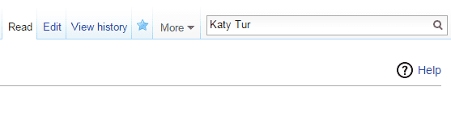
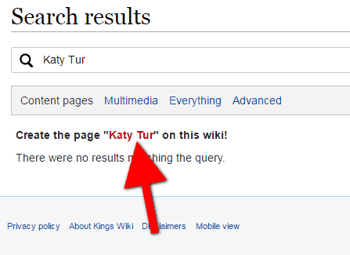
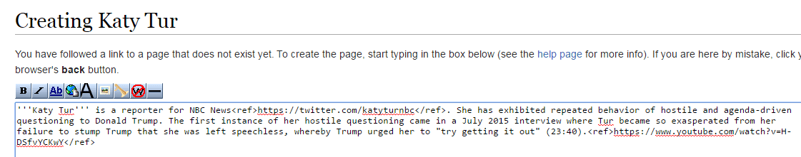
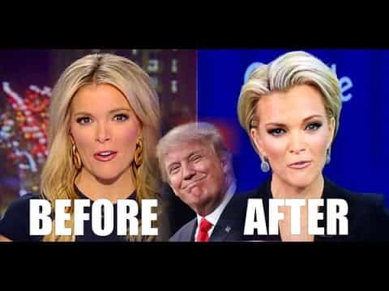

Daryush "Roosh" Valizadeh created ROK in October 2012. You can visit his blog at RooshV.com or follow him on Twitter and Facebook.


Today I’m launching Operation Eyes Wide Open, a wiki project to expose lying and hoaxing journalists. Through Kings Wiki, we will create permanent pages on journalists to display their hoaxes, lies, and lack of credibility for the public record. The archive will persist beyond the end of their lives.
As you already know, media outlets are full of activists who are masquerading as journalists, serving their billionaire masters instead of the public. Many people are waking up to this fact, but there’s still a large part of the population that has not yet realized that the media produces news that fits their pre-determined globalist narrative. ROK readers saw this first-hand when we were slandered as pro-rape activists in February.
While it’s quite difficult to hurt the owners of media outlets, it’s easy to put the squeeze on the lowly journalists at the bottom, whose reputation and livelihood is sensitive to public perception. By using a wiki platform to truthfully show their misdeeds, we can erode public trust in them over time, an attack method that is slower but deadly.
Right now there are hundreds of journalists and reporters who are deliberately misleading the public about the upcoming 2016 Presidential Election, as the recent DNC leaks show. I’d like to begin the operation by exposing 250 of them who are trying to swing the election in Hillary’s favor by showing a clear neglect and bias for truth towards Donald Trump. I hope we can accomplish this goal by September 26, the date of the first debate. The process has been started by creating pages on these four journalists:
If you encounter wrongful and untruthful anti-Trump reporting in the mainstream media, I ask that you take a few minutes to expose that journalist on Kings Wiki by sourcing the article, interview, tweet, or image that contains the violation(s). Here are step-by-step instructions on how to do so.
1. Create a Kings Wiki account by clicking this link.
2. Go to Kings Wiki and type the full name of the reporter in the search box. Press enter.

3. Click the red link to create the page.

4. Put the reporter’s name in bold using the following formatting: ”’Reporter Name”’
5. Write a few sentences about the reporter, including the bias, hoax, or lie that has been documented about him or her.

6. To add a web site reference, simply enclose the URL within <ref></ref>. Example: <ref>http://www.returnofkings.com</ref>.
7. Add the reference listing to the end of the page by pasting this code:
==References==
{{Reflist}}
8. Paste one of the following category codes to the end of the page. You can add both if it’s relevant.
[[Category:Reporters who have demonstrated an anti-Trump bias]]
[[Category:Reporters with a globalist agenda]]
9. Other useful formatting codes
10. To insert an image, click the “Upload file” link in the left column and then insert it by enclosing the full file name.
[[File:Chuck-todd-dnc-email-2.jpg]]
That’s it! Even if you have no wiki experience, you’ll be able to create your first article quickly with the above steps. Bookmark this link for fast access to this guide.

Besides the urgency of the upcoming election, Trump is the representation of a masculine and nationalist standard. If a journalist has bias against Trump, it’s an absolute guarantee that they’re also against us, and probably even participated in the meetup outrage earlier this year. Selecting anti-Trump journalists is simply a shortcut for finding liars, hoaxers, and cheaters. You are free to expose other journalists as well.
The point of this operation is not to go after honest journalists who merely disagree with our views or are rightfully critical on politicians or anyone else, but it’s clear that most mainstream journalists vehemently despise Trump and are doing everything they can to prevent him from winning the election in November. They are attempting to be the deciders instead of doing their jobs by displaying the truth to the voting public.
In spite of their blatant corruption, we must be honest on the wiki by citing our sources and not making up false claims. If you’re unsure of a reporter’s intentions, use phrases like “it seems” or “it appears.” We also will not allow anyone to publish private addresses and phone numbers.
Staff meeting at NBC News
When you see journalists pursue bogus attack angles against Trump or participate in contrived “scandals” that all other outlets seem to coincidentally parrot, it’s safe to reasonably conclude that they have an agenda, especially if their reporting history doesn’t show them applying the same critical standard to Hillary Clinton.
ROK has put truth on the first page of Google results for several journalists, such as Rosamund Erwin, Phoebe Moloney, Sarah Lacy, Sara Nelson, Geoff Mulvihill, and Emily Eveland. Now it’s time to take that to the next level through Operation Eyes Wide Open. Next time you see a journalist with an anti-Trump bias, or any other journalist who has shown themselves to be a liar, I urge you to expose the individual on Kings Wiki. It’s time to turn on the lights and watch these cockroaches scatter.
 If you like this article and are concerned about the future of the Western world, check out Roosh's book Free Speech Isn't Free. It gives an inside look to how the globalist establishment is attempting to marginalize masculine men with a leftist agenda that promotes censorship, feminism, and sterility. It also shares key knowledge and tools that you can use to defend yourself against social justice attacks. Click here to learn more about the book. Your support will help maintain our operation.
If you like this article and are concerned about the future of the Western world, check out Roosh's book Free Speech Isn't Free. It gives an inside look to how the globalist establishment is attempting to marginalize masculine men with a leftist agenda that promotes censorship, feminism, and sterility. It also shares key knowledge and tools that you can use to defend yourself against social justice attacks. Click here to learn more about the book. Your support will help maintain our operation.
Read Next: 5 Shocking Things I Learned From Working In The Mainstream Media